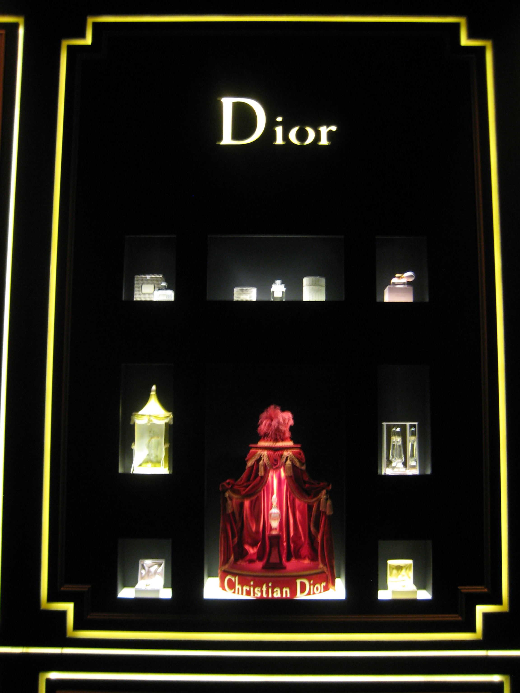

Las notas cálidas, especiadas o dulces suelen sentirse distintas en un local cerrado que al aire libre. Estas tres opciones tienen perfiles diferentes; probá una por vez y elegí la que te resulte cómoda.
Frutal, especiado y dulce
Afnan 9 PM
Afnan lista bergamota, lavandín, canela y manzana en la salida; luego muguete y flor de azahar, con pachulí, ámbar, vainilla y haba tonka en el fondo. Es una opción para quien busca una mezcla dulce con especias, en vez de un perfume principalmente cítrico.
Especiado y amaderado
Afnan 9 PM Elixir
La marca describe nuez moscada, elemí y cardamomo en la salida; pimienta de Jamaica, lavandín y cuero en el corazón; y ládano, pachulí y vainilla en la base. Comparalo con 9 PM si te atraen los acordes más especiados y cálidos.
Ámbar, tabaco y vainilla
Lattafa Asad Elixir
Lattafa publica pimienta rosa, azafrán y toronja en la salida; tabaco, cedro y vainilla en el corazón; y pachulí, olíbano, cashmeran y ámbar seco en la base. Puede ser interesante para quien prefiere una composición cálida con especias y maderas.
Aplicación
Menos puede ser más en un lugar cerrado
- Probá una atomización primero y esperá unos minutos antes de añadir otra.
- Si la salida te parece demasiado dulce, dejá que el perfume se asiente antes de descartarlo.
- Para una cena o un concierto en un espacio pequeño, elegí una cantidad que no invada a quienes están cerca.
- Pedí una muestra si está disponible; la piel y el clima cambian la experiencia.
Los nombres de la lista aparecen en el catálogo de referencia. Sus precios provienen de comercios externos y no indican inventario ni venta por Tu Perfume CR.